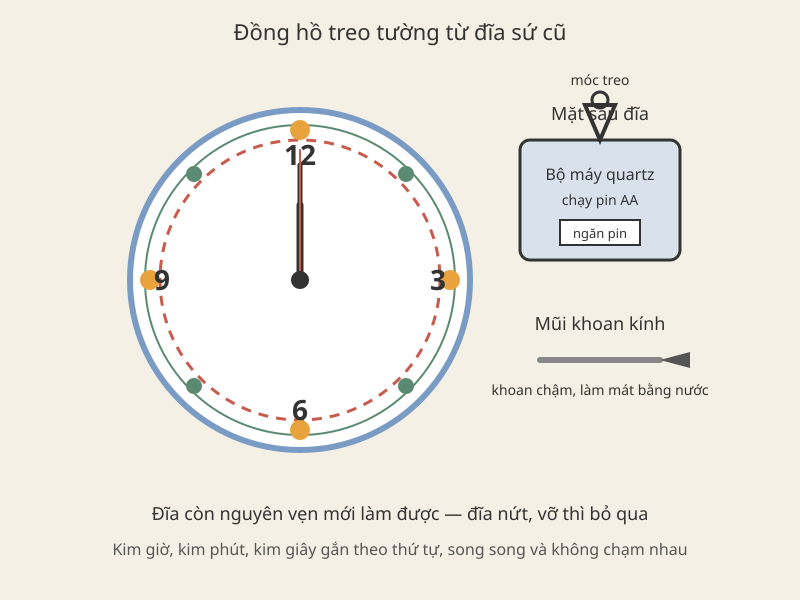

Tự làm đồng hồ treo tường trang trí từ đĩa cũ
Tác giả: Ruler
Một chiếc đĩa cũ trong tủ bếp có thể thành một chiếc đồng hồ treo tường vừa xem được giờ, vừa giữ lại một món đồ có kỷ niệm. Bài này hướng dẫn làm một chiếc đồng hồ như vậy từ đầu: chọn đĩa, chọn bộ máy, khoan lỗ giữa đĩa, gắn bộ máy và kim, đặt số giờ, rồi chạy thử trước khi treo. Bài này không có cây cảnh hay hoa tươi; còn cách treo an toàn thì bạn xem ở Bài 4.
Chọn đĩa nào làm được, đĩa nào nên bỏ qua
Việc đầu tiên không phải là mua bộ máy, mà là cầm chiếc đĩa cũ lên và kiểm tra thật kỹ. Một chiếc đĩa chỉ làm được mặt đồng hồ khi nó còn nguyên vẹn. Bạn nên soi đĩa dưới ánh sáng mạnh, nhìn cả hai mặt. Nếu đĩa có vết nứt dù nhỏ, có mảnh mẻ ở vành, hay có vết rạn chân chim lan ra từ một điểm, bạn nên bỏ chiếc đĩa đó. Đĩa sứ nứt hoặc vỡ có cạnh sắc, khi khoan rất dễ vỡ thêm, và khi treo lên tường, vết nứt có thể lan ra rồi làm đĩa rơi xuống.
Bạn nên chọn đĩa lòng nông, đường kính khoảng 25 đến 30 cm, vừa với phòng nhỏ. Đĩa càng phẳng thì kim càng chạy trơn, vì kim không bị vướng vào phần lòng đĩa lõm sâu. Các con số này chỉ là gợi ý của người viết. Về chất liệu, đĩa sứ và đĩa gốm là loại thường gặp nhất, hoa văn sẵn có nên bạn không cần vẽ thêm nhiều. Đĩa nhựa cứng, loại dày và chắc tay, cũng làm được, và khoan dễ hơn đĩa sứ, nên hợp với người chưa từng khoan đồ cứng bao giờ. Bạn nên chọn đĩa có hoa văn ở vành ngoài, còn giữa đĩa trơn, vì hoa văn ở giữa sẽ bị kim che mất.
Chọn bộ máy đồng hồ cho đúng
Bộ máy thường là loại quartz, chạy bằng một viên pin AA, không cần cắm điện. Bộ máy gồm hộp nhựa đặt sau đĩa, trục kim loại thò qua lỗ ra mặt trước, và ba kim: giờ ngắn, phút dài, giây mảnh.
Một số bộ máy quartz là loại 24 giờ: kim giờ quay hết một vòng trong 24 giờ. Hướng dẫn của một bộ máy quartz 24 giờ ghi rõ: kim giờ hoàn thành một vòng quay trong 24 giờ, và nếu bạn dùng mặt đồng hồ 12 số với bộ máy 24 giờ thì kim giờ sẽ chỉ một nửa giờ thực, ví dụ lúc 18 giờ kim sẽ chỉ vào số 3. Vì vậy, nếu mặt đĩa của bạn sẽ đánh số từ 1 đến 12 như đồng hồ thường, bạn phải mua bộ máy 12 giờ.
Trục của bộ máy phải đủ dài để thò qua đĩa và còn đủ phần ren để vặn đai ốc giữ bộ máy. Hướng dẫn của Scorpio Technology nêu rõ: độ dài trục cần thiết của bộ máy quartz được quyết định bởi độ dày của vật liệu làm mặt đồng hồ. Bạn nên đối chiếu độ dày đĩa với thông số độ dài trục ghi trên bao bì bộ máy. Một bộ máy quartz trong hướng dẫn của Manuals Plus có trục dài 14,5 mm, phần ren cao 6,7 mm và phù hợp với mặt đồng hồ dày từ 1 đến 4 mm; đây là thông số của riêng bộ máy đó.
Kim phút nên dài gần tới các số giờ nhưng không chạm vào vành đĩa hay chạm vào số giờ. Hướng dẫn của Scorpio Technology nêu cách chọn kim: kim đồng hồ được đo từ tâm lỗ trên kim, và bạn nên chọn kim có độ dài hợp với thiết kế và độ dài cần thiết của đồng hồ. Nếu kim đi kèm bộ máy quá dài so với đĩa của bạn, bạn có thể cắt ngắn kim, nhưng nên cắt cả kim giờ và kim phút để hai kim vẫn cân đối với nhau, theo cùng hướng dẫn trên. Bạn nên mua bộ máy kèm đủ phụ kiện: đai ốc, vòng đệm cao su, vòng đệm kim loại, móc treo và ba kim.
Dụng cụ và vật liệu cần chuẩn bị
Bạn nên gom đủ dụng cụ trước khi khoan. Bạn cần: đĩa cũ còn nguyên vẹn, lòng nông, khoảng 25–30 cm; bộ máy quartz 12 giờ kèm kim, đai ốc, vòng đệm, móc treo; pin AA mới, 1 viên; máy khoan và mũi khoan kính, gạch men, hợp với trục của bộ máy bạn mua; băng dính giấy; thước thẳng, bút chì mềm, thước đo góc; kính bảo hộ; khăn bông dày gấp lại để lót dưới đĩa; nước sạch trong bình xịt để làm mát mũi khoan; keo dán chắc; số dán hoặc sơn acrylic; khăn khô mềm. Thời gian làm chỉ là ước chừng của người viết, chưa đo thực tế.
Tìm tâm đĩa và khoan lỗ giữa đĩa
Tìm đúng tâm đĩa là bước quyết định chiếc đồng hồ có nhìn cân đối hay không. Nếu lỗ khoan lệch khỏi tâm dù chỉ vài milimét, kim sẽ quay lệch và số giờ đặt theo lỗ lệch đó cũng lệch theo. Cách tìm tâm đĩa được HowStuffWorks mô tả như sau: đặt đĩa nằm phẳng trên một chiếc khăn gấp lại, dùng thước đo từ bên này sang bên kia của đĩa, đánh dấu điểm giữa của đường kính đó, rồi đo tiếp từ trên xuống dưới, đánh dấu điểm giữa của đường kính thứ hai; nếu bạn đo chính xác, hai dấu đó sẽ trùng nhau tại một điểm, và đó chính là tâm đĩa. Bạn nên đo hai lần trước khi khoan. Bạn dán băng dính giấy lên tâm đĩa ở mặt trước để mũi khoan đỡ trượt, theo Sugar & Cloth.
Khi khoan, bạn nên dùng mũi khoan kính và gạch men, vì mũi khoan gỗ hay mũi khoan sắt thông thường rất khó khoan men sứ và dễ làm đĩa nứt. Sugar & Cloth dùng máy khoan không dây với mũi khoan kính và gạch men cỡ nửa inch, và lưu ý khoan từ mặt trước ra mặt sau để giảm sứt mẻ trên bề mặt đĩa, ấn nhẹ và để mũi khoan tự làm việc thay vì đè mạnh để tránh làm nứt đĩa. HowStuffWorks cũng nhắc khoan thật chậm để đĩa không bị vỡ, và trong lúc khoan phải nhớ tới kích thước trục của bộ máy, vì trục đó phải lọt qua lỗ trên đĩa. Spiegato nhắc đeo kính bảo hộ, làm chậm khi khoan vật liệu giòn và xịt nước lên sứ khi khoan. Bạn nên khoan theo nhịp chậm và đều: khoan vài giây, nhấc mũi khoan lên, xịt nước hoặc nhúng mũi khoan vào nước, rồi khoan tiếp. Bạn không nên ấn mạnh hay khoan liên tục không nghỉ, vì men sứ nóng lên rất nhanh và nứt vì nhiệt. Nếu bạn thấy vết rạn mới xuất hiện quanh lỗ khoan hay đĩa rung mạnh, bạn nên dừng khoan ngay và bỏ chiếc đĩa đó.
Gắn bộ máy vào mặt sau đĩa
Trước khi gắn cố định bất cứ thứ gì, bạn nên lắp thử toàn bộ bộ máy lên đĩa một lần, chưa dán keo, chưa vặn chặt, để phát hiện sớm ba lỗi hay gặp: trục quá ngắn so với độ dày đĩa, kim quá dài so với đĩa, và móc treo đặt sai vị trí làm đồng hồ treo lệch. Thứ tự gắn bộ máy theo hướng dẫn của Scorpio Technology gồm các bước sau: đặt giá treo lên phần cổ nhô lên của trục nếu có dùng giá treo, đặt vòng đệm cao su lên trục, đặt mặt đồng hồ vào đúng vị trí, đặt vòng đệm đồng rồi vặn đai ốc sáu cạnh, vặn vừa đủ chặt bằng tay. Bạn nên vặn đai ốc vừa đủ chặt bằng tay, không dùng kìm vặn mạnh.

Nếu đĩa của bạn hơi dày so với trục của bộ máy, đai ốc có thể không vặn vừa. Sugar & Cloth gặp đúng trường hợp này: đĩa của họ dày khoảng một phần mười sáu inch nên đai ốc không vừa khít, và thay vào đó họ dùng keo dán chắc để cố định bộ máy vào mặt sau đĩa, đảm bảo trục giữa lọt qua lỗ đã khoan. Khi dán keo, bạn phải chừa đường vào ngăn pin, theo Sugar & Cloth.
Gắn kim và đặt số giờ
Gắn kim là bước cần tay nhẹ nhất, vì kim đồng hồ mỏng và dễ cong. Thứ tự gắn kim được cả ba nguồn hướng dẫn nêu giống nhau: kim giờ ngắn gắn trước, kim phút dài gắn sau, kim giây mảnh gắn cuối cùng. Scorpio Technology hướng dẫn ấn nhẹ kim giờ lên trục ở vị trí 12 giờ, rồi ấn kim phút lên trục ở vị trí 12 giờ, rồi ấn kim giây nhẹ nhàng lên chốt bên trong trục. Sau khi gắn kim, bạn kiểm tra các kim song song, không chạm nhau và không chạm mặt đĩa. Manuals Plus nhấn mạnh rằng các kim phải song song với nhau và không chạm vào nhau, nếu chúng chạm nhau thì uốn nhẹ để tránh kẹt, vì kẹt có thể làm đồng hồ dừng.
Để đặt số đều nhau, bạn dùng thước đo góc: Scorpio Technology nêu rằng có thể dùng thước đo góc để xác định độ, 12 giờ ở vị trí 90 độ, và có 30 độ giữa mỗi số. Bạn nên đánh dấu vị trí 12, 3, 6 và 9 trước, rồi chia đều các số còn lại vào giữa, thay vì đánh số 1 rồi đánh lần lượt tới 12, vì đánh lần lượt rất dễ lệch dần về cuối vòng.
Chạy thử trước khi treo
Bạn không nên treo đồng hồ lên tường ngay sau khi gắn kim xong. Bạn nên chạy thử đồng hồ trên mặt bàn trước, ít nhất trong vài giờ, để phát hiện lỗi khi sửa còn dễ. Bạn lắp pin AA vào ngăn pin ở mặt sau bộ máy, chú ý đúng cực âm dương theo dấu trong ngăn pin, rồi chỉnh giờ bằng núm chỉnh giờ ở mặt sau bộ máy, theo hướng dẫn của Manuals Plus. Nếu kim dừng lại, bạn nên tháo pin ra, kiểm tra xem kim có chạm nhau không, đai ốc có vặn quá chặt không, và pin có lắp đúng cực không. Manuals Plus liệt kê cách xử lý khi đồng hồ không chạy hoặc dừng chập chờn: kiểm tra pin đã lắp đúng cực chưa, thay pin AA mới, và đảm bảo kim không chạm vào nhau hay chạm vào mặt đồng hồ.
Treo lên tường và chọn chỗ đặt
Bài này không viết lại quy tắc treo tường, vì cách treo an toàn cho tường nhà thuê, cách chọn móc theo cân nặng và cách gỡ khi trả phòng đã có đầy đủ trong Bài 4. Bạn nên xem cách treo an toàn ở Bài 4 trước khi treo đồng hồ, và chỉ treo khi bạn đã chọn được cách treo hợp với cân nặng của chiếc đồng hồ đĩa của mình. Bạn nên tránh treo đồng hồ ngay phía trên đầu giường hay phía trên bàn làm việc, và tránh nơi ẩm ướt hay nắng gắt chiếu trực tiếp cả ngày: hướng dẫn của Manuals Plus lưu ý giữ đồng hồ tránh nhiệt độ cao, ánh nắng trực tiếp và độ ẩm cao. Nếu bạn ở nhà thuê, bạn nên hỏi chủ nhà trước khi gắn bất cứ thứ gì lên tường, như Bài 4 đã nhắc.
Bảo quản và sửa lỗi thường gặp
Đồng hồ đĩa cũ không cần chăm sóc cầu kỳ, nhưng cần tránh ba thứ: va đập, ẩm và nắng gắt. Bạn nên lau bụi trên mặt đĩa bằng khăn khô mềm, không lau bằng khăn ướt, vì nước có thể thấm vào mặt sau và làm hỏng bộ máy. Nếu bạn phát hiện vết nứt mới trên đĩa, bạn nên tháo đồng hồ xuống ngay, vì đĩa nứt treo trên tường có thể vỡ và rơi xuống bất cứ lúc nào. Bảng dưới đây do người viết tự tổng hợp từ các bước trong bài, để bạn đối chiếu nhanh khi đồng hồ gặp vấn đề.
| Lỗi | Nguyên nhân có thể xảy ra | Cách xử lý |
|---|---|---|
| Kim chạm nhau, đồng hồ dừng | Kim gắn không song song, kim bị cong khi ấn | Tháo pin, uốn nhẹ kim cho song song |
| Đồng hồ chạy chậm hoặc dừng chập chờn | Pin yếu, pin lắp sai cực, kim vướng vào nhau | Kiểm tra cực pin, thay pin AA mới |
| Lỗ khoan lệch khỏi tâm đĩa | Đo tâm sai, mũi khoan trượt lúc bắt đầu | Không sửa được; chọn đĩa khác, đo lại tâm |
| Đĩa nứt khi khoan | Ấn mạnh, khoan liên tục không làm mát, đĩa đã nứt từ trước | Dừng khoan ngay, bỏ đĩa nứt |
| Đai ốc không vặn được | Đĩa dày hơn trục của bộ máy chịu được | Dùng keo dán chắc, hoặc chọn bộ máy trục dài hơn |
| Số giờ dán lệch | Đánh số lần lượt từ 1 đến 12 mà không chia đều | Đánh dấu 12, 3, 6, 9 trước rồi chia đều |
Khi nào nên dừng và mua đồng hồ sẵn
Bạn nên dừng dự án này lại khi không tìm được chiếc đĩa nào còn nguyên vẹn, khi bạn chưa từng dùng máy khoan và không có ai có kinh nghiệm đứng cạnh hướng dẫn lần đầu, hay khi đĩa bạn thích quá dày so với mọi bộ máy bạn tìm được mà bạn không muốn dùng keo dán để cố định bộ máy. Bạn cũng nên mua đồng hồ sẵn khi bạn cần một chiếc đồng hồ chạy thật chính xác để xem giờ làm việc, hay khi bạn cần đồng hồ cho phòng của trẻ nhỏ.
Kết luận
Tự làm đồng hồ treo tường từ đĩa cũ là một dự án vừa sức với người mới, nếu bạn nhớ đúng thứ tự: kiểm tra đĩa còn nguyên vẹn, chọn bộ máy 12 giờ có trục đủ dài, tìm tâm đĩa rồi khoan chậm, gắn bộ máy vừa đủ chặt bằng tay, gắn kim theo thứ tự kim giờ, kim phút rồi kim giây, đặt số giờ đều nhau, và chạy thử trên bàn trước khi treo. Trước khi treo, bạn nên xem cách treo an toàn ở Bài 4 và kiểm tra keo dán móc treo đã khô hoàn toàn.
Nguồn tham khảo
- Sugar & Cloth, "DIY Plate Clock" — dùng cho các khẳng định: làm đồng hồ đĩa cần đĩa trang trí, bộ máy đồng hồ chạy pin và mũi khoan kính, gạch men; khoan lỗ giữa đĩa từ mặt trước ra mặt sau để giảm sứt mẻ, ấn nhẹ và để mũi khoan tự làm việc để tránh làm nứt đĩa; đĩa dày khoảng 1/16 inch có thể làm đai ốc không vừa, khi đó dùng keo dán chắc để cố định bộ máy vào mặt sau đĩa; phải đảm bảo vẫn với tới được ngăn pin trước khi cố định bộ máy vĩnh viễn; gắn kim theo thứ tự kim giờ ngắn trước, kim phút dài sau; kim quá dài so với đĩa thì cắt ngắn hoặc tìm bộ kim nhỏ hơn; dán băng dính lên điểm khoan giúp mũi khoan đỡ trượt, và khoan sứ sinh nhiệt nên nhúng mũi khoan vào nước định kỳ hoặc xịt nước lên đĩa để tránh quá nhiệt (truy cập 23/11/2026): https://sugarandcloth.com/diy-plate-clock/
- HowStuffWorks, "How to Turn an Old Dinner Plate into a Wall Clock" — dùng cho các khẳng định: làm đồng hồ đĩa cần đĩa, máy khoan, bộ máy đồng hồ chạy pin, thước và bút chì; tìm tâm đĩa bằng cách đo từ bên này sang bên kia, đánh dấu điểm giữa của đường kính, rồi đo từ trên xuống dưới, đánh dấu điểm giữa, hai dấu trùng nhau tại tâm đĩa; khoan thật chậm để đĩa không bị vỡ, và trong lúc khoan phải nhớ tới kích thước trục của bộ máy vì trục phải lọt qua lỗ trên đĩa; khoan tạo ra nhiều bụi nên vệ sinh đĩa kỹ khi khoan xong; dùng thước đo góc để đặt các số đúng vị trí; (truy cập 23/11/2026): https://lifestyle.howstuffworks.com/crafts/recycled/dinner-plate-wall-clock.htm
- Manuals Plus, "24-Hour Quartz Wall Clock Movement Kit Instruction Manual" — dùng cho các khẳng định: bộ máy quartz 24 giờ có kim giờ hoàn thành một vòng trong 24 giờ, khác với đồng hồ 12 giờ thông thường, và dùng mặt đồng hồ 12 số với bộ máy 24 giờ thì kim giờ sẽ chỉ một nửa giờ thực, ví dụ lúc 18 giờ kim sẽ chỉ vào số 3; bộ máy mẫu này có trục dài 14,5 mm, phần ren cao 6,7 mm, phù hợp với mặt đồng hồ dày từ 1 đến 4 mm, và chạy bằng một viên pin AA; gắn kim theo thứ tự kim giờ, kim phút, kim giây, các kim phải song song và không chạm vào nhau, nếu chạm nhau thì uốn nhẹ để tránh kẹt làm đồng hồ dừng; lắp pin đúng cực, chỉnh giờ bằng núm ở mặt sau bộ máy; giữ đồng hồ tránh nhiệt độ cao, ánh nắng trực tiếp và độ ẩm cao (truy cập 23/11/2026): https://manuals.plus/ae/1005003407999474
- Scorpio Technology, "Clocks & Woodworking" — dùng cho các khẳng định: thứ tự lắp là đặt giá treo lên cổ trục, đặt vòng đệm cao su lên trục, đặt mặt đồng hồ vào đúng vị trí, đặt vòng đệm đồng rồi vặn đai ốc sáu cạnh vừa đủ chặt bằng tay; gắn kim giờ rồi kim phút ở vị trí 12 giờ, rồi gắn kim giây lên chốt bên trong trục; đảm bảo có khoảng hở giữa các kim, uốn nhẹ kim để không vướng vào nhau; độ dài trục cần thiết được quyết định bởi độ dày của vật liệu làm mặt đồng hồ; kim được đo từ tâm lỗ trên kim, kim quá dài có thể cắt ngắn, nên cắt cả kim giờ và kim phút để giữ cân đối; đặt số giờ bằng thước đo góc, 12 giờ ở vị trí 90 độ và có 30 độ giữa mỗi số (truy cập 23/11/2026): https://www.scorpiotechnology.com.au/clocks-woodworking
- Spiegato, "What Are the Best Tips for Making DIY Clocks?" — dùng cho các khẳng định: bộ máy đồng hồ tự làm thường nhỏ và chạy bằng pin, không cần ổ cắm điện; đĩa sứ có hoa văn là lựa chọn phổ biến làm mặt đồng hồ, và bộ máy phải giấu được ở phía sau mặt đồng hồ; khoan thủy tinh và sứ có thể cần dụng cụ chuyên dụng, người khoan nên đeo kính bảo hộ và làm chậm khi khoan vật liệu giòn, và người làm thường xịt nước lên thủy tinh và sứ khi khoan để tránh làm cháy lỗ khoan và giữ bụi xuống thấp (truy cập 23/11/2026): https://spiegato.com/en/what-are-the-best-tips-for-making-diy-clocks